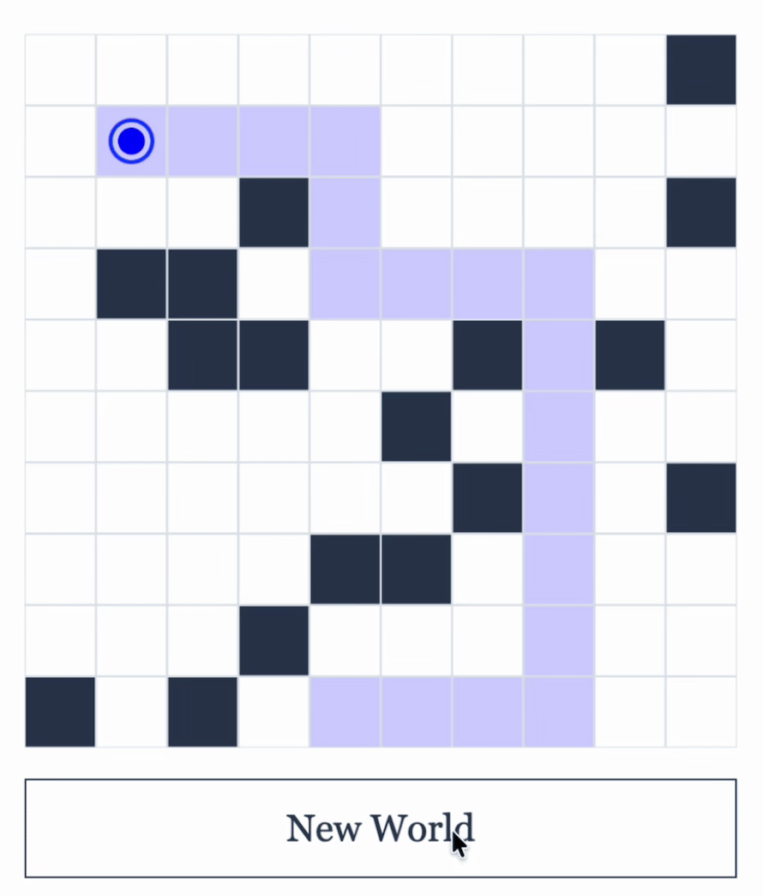
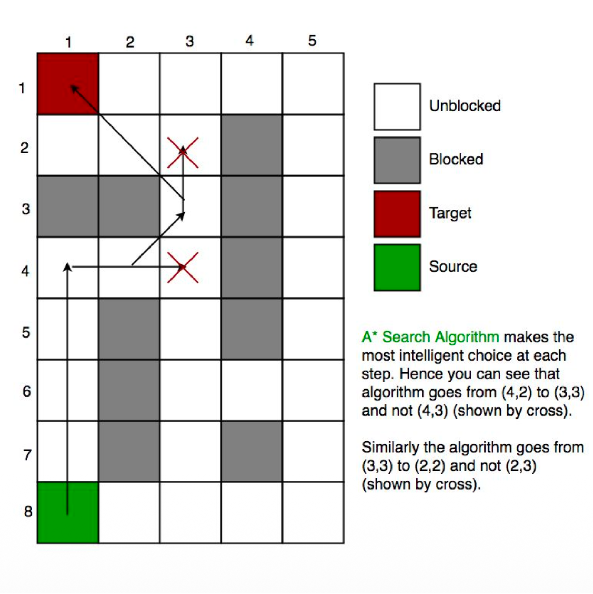
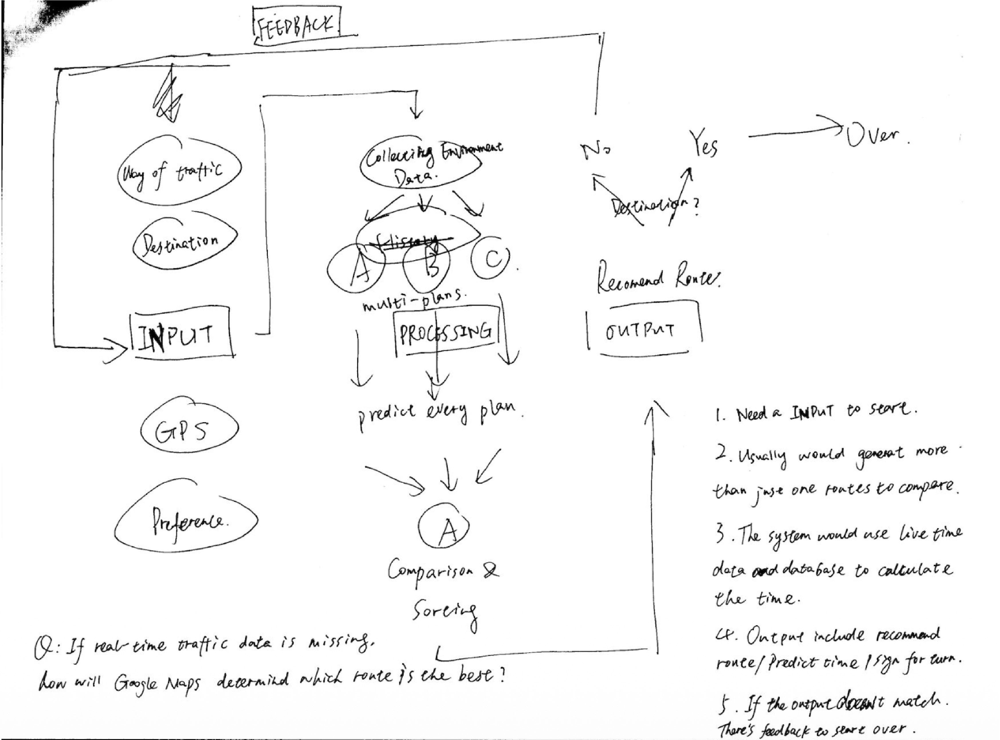
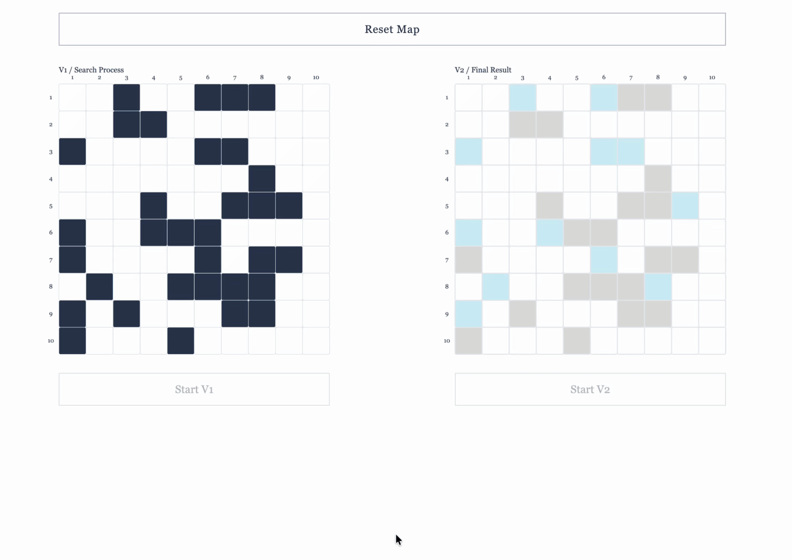
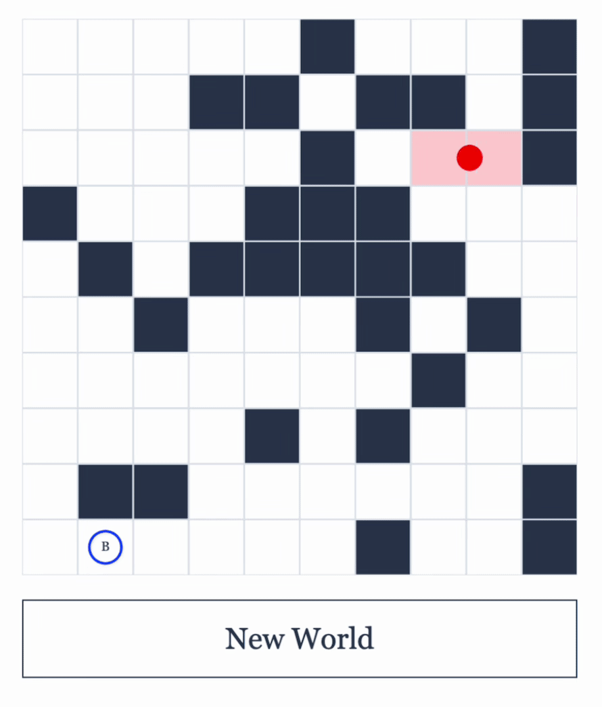
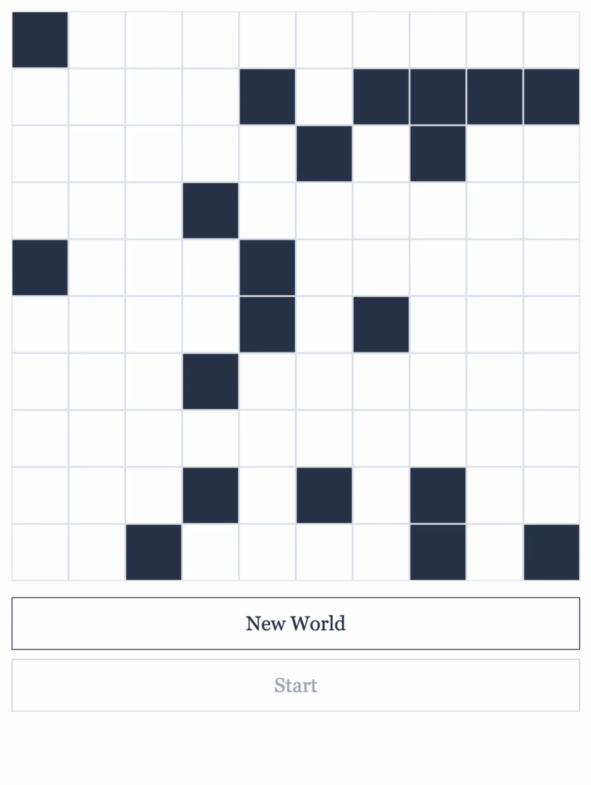

Old Wise

Starting with Google Maps, I drew a flowchart of the entire system and tried to understand the simplest pathfinding algorithm.


Basic Algorithm
Using the A* algorithm I researched in Week 1, I built the first demo. Written steps and scrolling text show how the code works.

Compared 2 Version
I compared two versions: one visualizes the process, while the other directly presents three optimal routes. Which looks more intelligent?

VS
A new world! Old Wise struggles to move, but gets every step right. Young Blood is very fast, yet seems to keep running into walls.


VS
Which one is intelligent? Which one is more intelligent?
